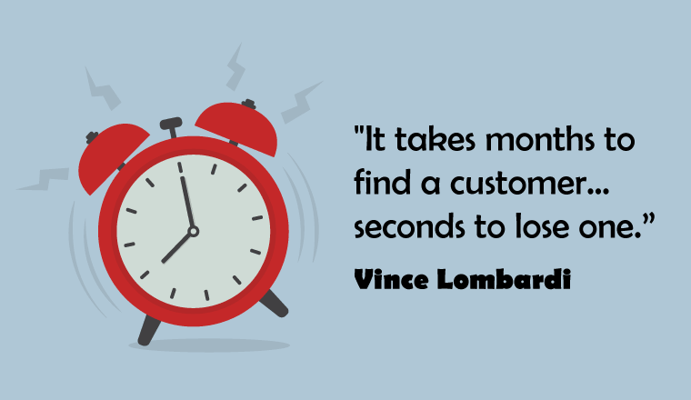

OUR MISSION: We serve. With our hearts we create a great place to be. With our minds we create an excellent place to shop. OUR VALUES: We are passionate about our customers and will fight for their rights.
View Our Great Offers and Have Goods Delivered Right to Your Doorstep! Delivered to the Drop Off. Stick to Your Budget. Shop Online 24/7. Save Time and Money. Online only deals. Skip the Queues. Safe, Simple and Secure. Online Shopping Lists. Spend Your Points.
JACK & JILL'S HYPERMARKET is a retail business in the fast-moving consumer goods industry on the African continent that believes doing good is good business.JACK & JILL'S HYPERMARKET operates through multiple store formats under two brands – JACK & JILL'S HYPERMARKET and Spar – and we have the largest online grocery business in Africa.
What is the purpose of JACK & JILL'S HYPERMARKET ?
Grow sales in line with, or ahead of the market, by providing great value, service and innovation for customers: The focus here is on delivering a first-class fresh, convenience and grocery offer, which gives customers unbeatable prices, value and service
JACK & JILL'S HYPERMARKET
jnj.co.za
JACK & JILL'S is the second largest supermarket chain store in South Africa, and was established in 1970. It can also be found in other regions of southern Africa, including as Botswana, Zambia, Zimbabwe, Lesotho, Namibia, Swaziland, and had plans to open in Malawi but has yet to do so.
Stock price: PIK (JSE) 5 131,50 ZAC -29,50 (-0,57%)
11 Mar, 10:17 SAST - Disclaimer
Customer service: 080 011 2288
Headquarters: Durban
CEO: Ric Richards (23 Jan 2014)
Founder: Jack Goldins
Founded: 1970, Cape Town
